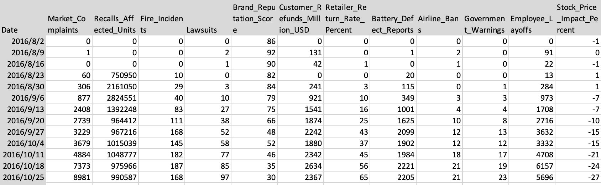
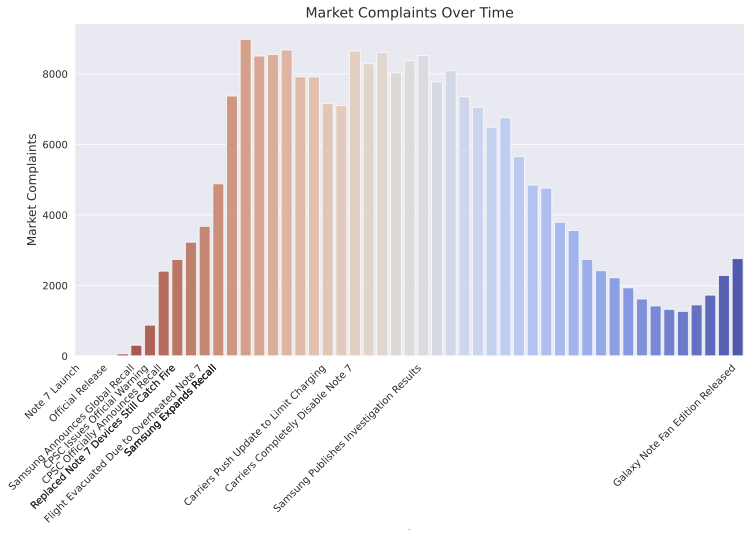
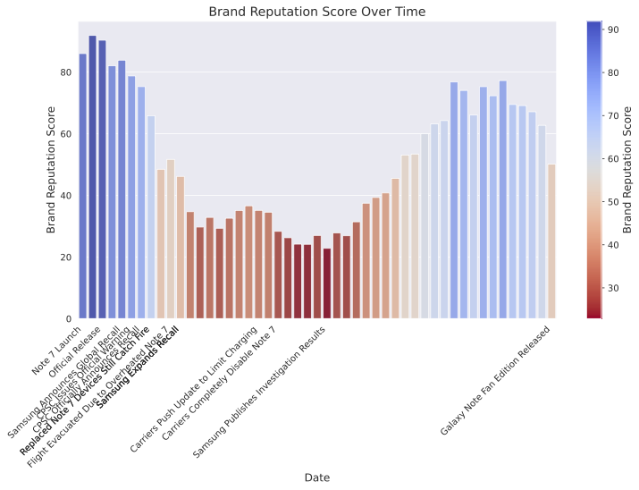
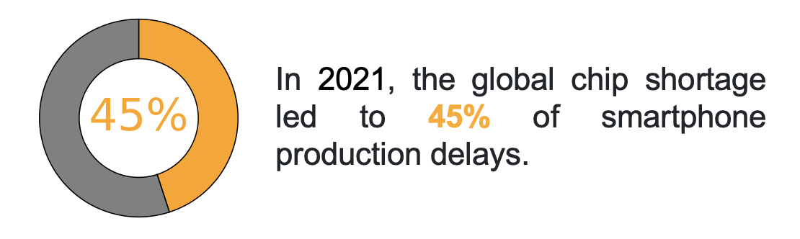
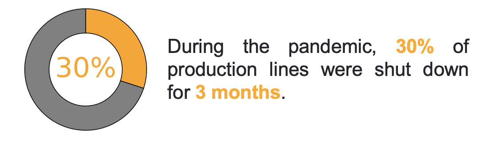
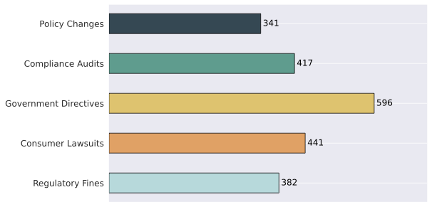
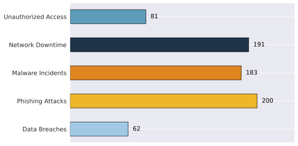

This risk management tool was developed by Ruoxin Feng, Yifan Luo, and Cheng Yu at Technische Universität München. It is designed for mobile manufacturers, particularly teams focused on quality control, consumer safety, and strategic decision-making.
Risk management is often debated—what it entails, how it should be applied, and what it can achieve. The ISO 31000 standard, published in 2009, provides a structured approach to these questions. Building on ISO 31000, this tool offers guidance on effectively implementing risk management in the mobile manufacturing sector, recognizing that risk carries both opportunities and challenges.
In 2016, Samsung launched the Galaxy Note 7, a highly anticipated smartphone featuring cutting-edge technology and a high-capacity battery. However, shortly after its release, reports of overheating and battery explosions emerged worldwide.
In response, Samsung issued a global recall and replaced defective units. Unfortunately, the replacement devices also caught fire, leading to a second recall and the permanent discontinuation of the Note 7.
This incident became one of the most significant product recalls in tech history, highlighting critical risks in battery safety, quality control, and crisis management.
Samsung unveils the Galaxy Note 7, a highly anticipated smartphone featuring cutting-edge technology and a high-capacity battery.
Users report overheating and battery fires. Samsung starts investigating the issue.
Samsung recalls 2.5 million units worldwide due to safety concerns.
Classify risks using a 5×5 risk matrix to determine which require immediate action (red areas) and which can be monitored or delayed (yellow areas).
Users can determine the risk level by inputting different likelihoods and impacts via sliders.
Risk example: Battery Overheating or Explosion, Manufacturing Defects, Component Quality Issues, Supply Chain Disruptions, Product Design Flaws, Software Bugs or Vulnerabilities, Delayed Product Launch, Performance Below User Expectations, Inadequate After-Sales Service, User Data Privacy Breaches etc.
Based on the Risk Matrix of Mobile Manufacturing Process, according to global risk management standards (ISO 31000, COSO ERM framework), leading consulting reports (McKinsey, BCG), and real-world case studies, we classify mobile manufacturers' risks into the following six categories.
Disruptions in procurement, production, and distribution of essential components.
Defects, malfunctions, or safety hazards that can lead to recalls and reputational damage.
Declining consumer trust, poor market positioning, and reputational damage.
Violations of IP laws, regulatory standards, and government policies leading to lawsuits.
Data breaches, hacking incidents, and security vulnerabilities exposing sensitive user info.
Factory shutdowns, labor disputes, equipment failures, and inefficiencies affecting manufacturing output.
Source: Samsung SDI Risk Management
Samsung SDI's Board of Directors comprehensively manages a range of risks that may occur in the business environment concerning operations, finance, and workplace safety, and makes major decisions.
An internal control system for systemic risk management was established to specify area-specific risk policies and potential risk categories. Responsible departments engage in preemptive management and regular assessment for respective risks, and the results and response strategies are eventually reported to the Board of Directors either through the Management Committee or the Sustainability Management Committee. In addition, risks associated with the material topics identified through annual materiality assessment are regularly reviewed through the Sustainability Management Council to develop and implement countermeasures.
Samsung created and operated the Risk Management Team as a dedicated organization for the systemic management of project-related risks. An emergency contact system for immediate response in case of emergency was established, and it manages risks so that they can be reported to the committee.
In addition, a company-wide consensus on the key risks was built to create a culture of risk management at all levels so that the employees identify and preemptively respond to risk in their own working environment. Risk factors associated with product safety & quality, injuries, and compliance are incorporated in executive and manager performance appraisal metrics, and appraisal outcomes are reflected in determining their compensation. Employees, who immediately report quality risk that may arise throughout our entire operations spanning manufacturing, purchasing, and sales, are recognized with the Quality Hero award to encourage proactive risk identification and reporting.
Samsung conducts ESG due diligence on its partners to monitor and manage ESG risk that may arise along its supply chains and has established a system for employees to immediately report any potential risk that could potentially lead to injuries upon detecting such risk to ensure workplace safety.
For compliance risk, Samsung Compliance Program Management System (CPMS) assists employees in obtaining information on risk prevention themselves and submit their whistleblowing reports for work-related compliance issues.
Samsung integrates risk assessment into its strategic planning to prevent recurrence of incidents like the Note 7 recall.
Due to data availability and GDPR considerations, we have simulated the recall data and social media comments based on the timeline mentioned above.
The following visualization represents the simulated data and social media comments regarding the recall process.
Monitoring product defects, customer complaints, and recalls.
Monitoring brand reputation, consumer trust, and market share.
Tracking supplier bankruptcy, material shortages, and logistics delays.
Tracking factory shutdowns, equipment failures, and workforce shortages.
Tracking lawsuits, regulatory compliance, and government policies.
Monitoring data breaches, hacking incidents, and privacy vulnerabilities.
